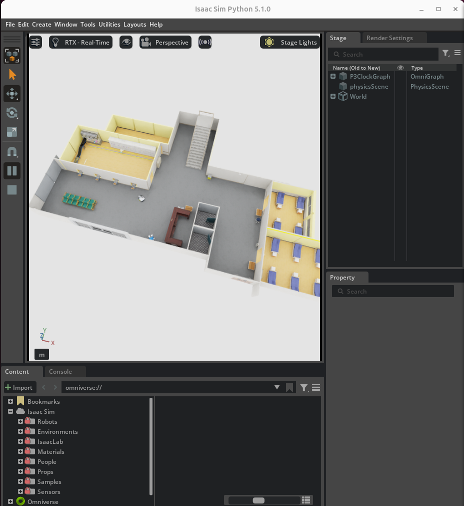
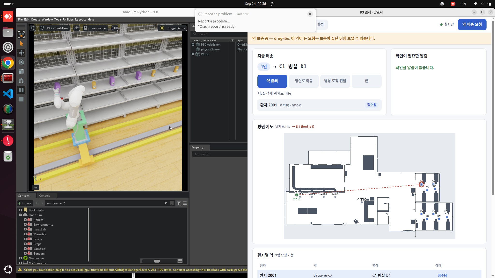
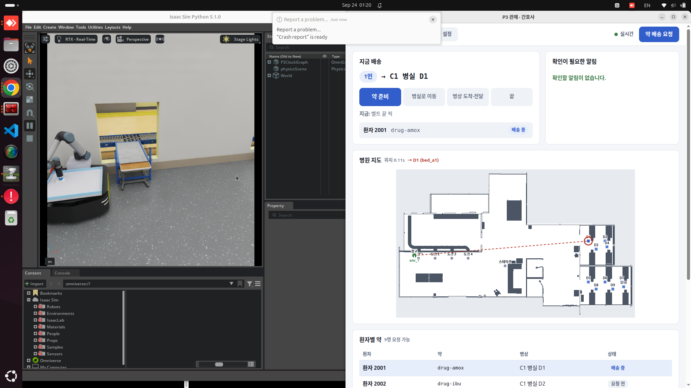
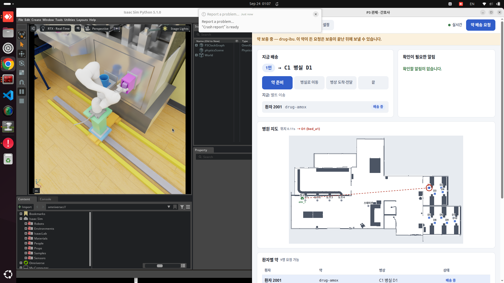
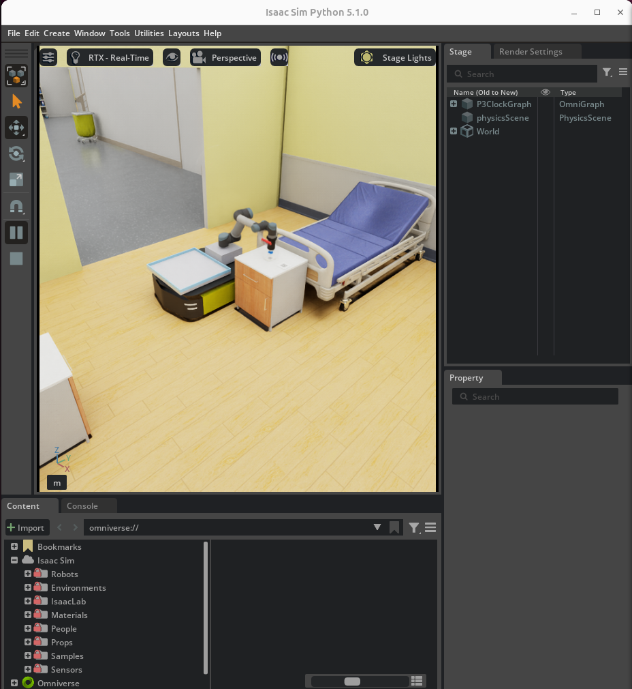

3.1 디지털 트윈 설계 및 납품 품질
20점
14/14
v1.0 판정 회전 · 병원 전 구간
10/10
병상 D1–D10 배송(v0.5.0)

병원 전체 — 조제실 · 복도 · 병실
- 과제병원 약이 조제실에서 병상까지 가는 과정을, 실제로 실험하기 위험한 병동 대신 시뮬레이션에서 검증한다
- 방법확정 시나리오 한 흐름 · 통과 기준을 실행 전에 동결(protocol v4) · 실행 명령과 자산 해시를 저장소에
- 결과v1.0 회전 7 에서 한 PC 로 14 attempt 모두 판정선(다섯 장면 · 배송 · 접촉 0 · 녹화) 통과. 다중 PC 두 칸은 미실행
3.2 시뮬레이션 환경 구성
10점
419,292 → 0
PhysX 경고(한 회차)

레일 위 M0609 가 약통 선반에서 보충
- 과제선반 충돌 메시가 매 스텝 경고를 내고, 레일 팔 구동이 물리 스텝을 멈췄다
- 방법충돌체를 실측 판 두께 상자로 · 레일 구동 강성 조정 · /clock 하나 · tf · 라이다 · 카메라를 ROS2 로
- 결과Play/Stop 뒤 자동 복구 → 리셋 → 같은 주문이 다시 배송 완료(여러 회차)
3.3 개별 로봇 제어
25점

UR5 가 컨베이어 끝 봉투를 집어 트레이에
- 과제세 로봇(M0609 보충 · UR5 집기 · AMR 운반)이 각자 일을 안정적으로 끝내야 한다
- 방법팔 속도는 제조사 사양의 80 % · 병상에서 도는 자리를 접근점으로 옮김 · 감속기가 실제 벽까지 거리로 속도를 정함
- 결과병상 10곳 모두 배송, 접촉 0. 경로 계획의 안전 여유(팽창 반경)는 그대로 두고 빨라졌다. 감속기 정지 규칙은 v1.0.1 로 미룸(#752)
3.4 AI 비전 인식 및 활용
10점

M0609 손 카메라(D455)가 약통 QR 을 확인하고 장착
- 과제M0609 손 카메라가 약통 QR 을 읽지 못했다(모듈 3/3 판독 실패)
- 방법QR 을 카메라가 보는 면으로 · 네 점 원근 보정 뒤 재판독 · 작으면 2배 확대 재판독 · 로봇이 멈춘 뒤 읽기
- 결과맞는 약이면 끼우고, 틀리거나 유효기간이 지나면 거부한다(v1.0 판정). 9/29 main 은 봉투 QR · 병상 QR 도 카메라로 맞춰야 집고 내려놓는다 — 검증 전
3.5 시스템 통합 및 동적 대응 검증
35점
53/63 → 14/14
판정 run: v0.5.0 → v1.0
 역할 분리 구조(P3_ROLES) — 기본은 한 PC. 다중 PC 판정은 회전 1–3 에만 있고 v1.0 에서는 미실행
역할 분리 구조(P3_ROLES) — 기본은 한 PC. 다중 PC 판정은 회전 1–3 에만 있고 v1.0 에서는 미실행
- 과제로봇 셋이 한 시나리오를 끊김 없이 돌고, 배치가 바뀌거나 급한 주문이 끼어들어도 버텨야 한다
- 방법로봇 사이 인터락 · 진열 무작위(seed 11 · 23) · 긴급 주문 · Play/Stop 복구 · AMR 2대 · 같은 16 attempt 판정을 버전마다
- 결과10건 시험이 4/10 회귀를 잡아 10/10 으로. v0.5.0 실패 10건은 분류(robot 1 · infra 6 · operator 3)해 남기고, v1.0 은 14/14
3.6 발표 및 시연
5점
300 s
영상 158 s · 슬라이드 142 s

병상 보관함에 약을 넣는 장면(9/24 정지 캡처)
- 과제5분 안에 기능이 눈에 보이게 전달해야 한다
- 방법flowchart · 시스템 구조도 · 기술 스택을 실제 코드와 같게 · 등록 run 녹화를 이어 붙이고 배속 · run ID 를 화면에
- 결과본 발표 7쪽 + 제어 · 구조 · 스택 3쪽 + 질의응답용 근거 부록(증거 · 회차 · 한계 전부)
3.7 챌린지
5점
0.42 → 0.69
시뮬 속도 rtf(같은 PC)
- 과제병원에서 Nav2 가 한 곳도 도착하지 못했고, 시뮬레이션은 실제 속도의 1/3 이었다
- 방법원인을 한 층씩 잘라 한 번에 한 변수만 바꿔 잼(지도 · 위치 추정 · 넘김 · 충돌체 · 렌더 주기)
- 결과두 편의 기술 리포트 — 주행 0/6 → 6/6, rtf 0.42 → 0.69(같은 PC, 장비별 표)